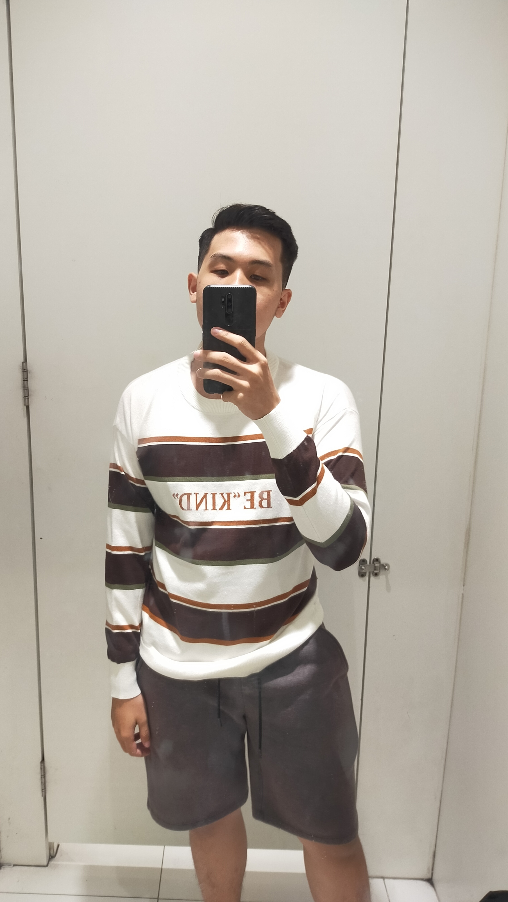

Hello world! I am Pason Cheam Tung Huay. A current student in UCSI University studying computer engineering course. I created this personal blog to hone my skills in web development. I also wanted to capture my memories of my university life so I could keep this precious momento alive forever and share it with my beloved friends and family.
This website will include my personal experiences and interesting encounters in my university. As you all may know, life can be random and fascinating things can happen without realising it. These experiences comes in different varieties and form, hence the famous saying, "Variety is the spice of life" - some random stranger. If you are a UCSI student like me. You are very welcomed to follow my instagram account! (no follow back guarantee, hehe)
From time to time, you will see some changes in the website. This is because I will updted the website to add new stories and try to make the website look more aesthetically pleasing to you humans out there. I hope you will have fun reading my stories. Thank you~~
Created by Pason Cheam Tung Huay